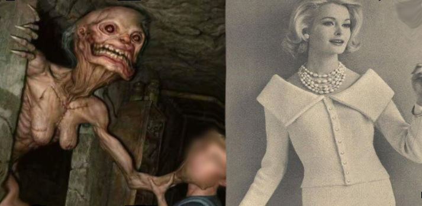

Projeto Abigail (Area51)

Em 1943, havia um cientista chamado Albert Western, que trabalhava para o exército americano em uma base militar secreta da força aérea, criada no território denominado Área 51.
Albert era obcecado em desenvolver o soldado perfeito. O cientista solicitou voluntários para o experimento, mas a maioria das pessoas não estavam dispostas a doar o próprio corpo para o experimento, além disso, o homem que cedesse ao experimento, deveria ser de total confiança para evitar que as descobertas caíssem em mãos inimigas, então ele decidiu que a pessoa certa para esse trabalho seria a própria filha. Foi aí que o cientista deu início ao "PROJETO ABIGAIL".
No entanto, pouco tempo depois de dar início ao experimento, os colegas do cientista o acoselharam a parar. O rosto de Abigail começou a se deformar, seus dentes começaram a crescer de foma descomunal, seus cabelos começaram a cair e sua pele começou a ficar enrugada. Abigail havia se tornado uma aberração. Mesmo assim, o cientista não desistiu, ele estava disposto a continuar até as últimas consequências, pois sabia que se parasse, Abigail morreria, e ao contrário do que você deve estar pensando, Albert amava a filha.
Segundo relatos de alguns funcionários, eles tinham que levar uma grande quantidade de comida para um ser enorme que ficava enjaulado, e que, às vezes, viam Albert passar horas conversando e até chorando perto da jaula.
Abigail havia perdido completamente a razão, ela media quase 3 metros de altura, seus ossos largos conservavam apenas um pouco de pele. Sem sua consciência, agora ela era apenas um animal selvagem.
Todas as pessoas envolvidas no experimento alegaram que a operação tinha resultado em um fracasso, mas Albert ainda acreditava que poderia dar certo e se negava a todo custo a acabar com a vida de Abigail, como a maioria de seus colegas haviam sugerido.
Dois anos após Abigail ficar irreconhecível, Albert finalmente desistiu de que aquilo iria realmente dar certo, ele acabou tirando a própria vida, mas antes, deixou uma carta para seus colegas, implorando para que salvassem sua filha.
Com Albert morto, o exército não estava disposto a continuar gastando dinheiro tentando fazer Abigail voltar ao normal, mas atenderam ao pedido de Albert. Não a matariam, deixariam que a fome fizesse isso. Os funcionários pararam de fazer comida para ela.
Na primeira noite, os funcionários ouviram gritos e uivos de Abigail.

De alguma forma, ela acabou fugindo e matando dois guardas, mas ela só queria comer. Para evitar mais mortes, o governo americano decidiu celar toda a área em que Abigail se encontrava.
Já faz mais de 70 anos desde que o projeto Abigail foi dado como finalizado. Dizem que ainda é possível que Abigail esteja viva, já que ex-militares alegavam ter ouvido seus gritos de desespero. Os portões continuam fechados e ela nunca foi executada, os soldados temiam que, ao abrir os portões, ela acabasse fuggindo.
Dizem que é por isso e tantos outros casos que o governo americano protege a área 51 a todo custo.
Todos arquivos e provas do experimento científico, foram supostamente destruídos antes de Albert cometer suicídio.